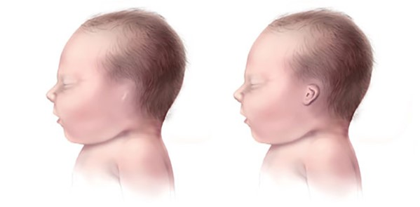

Microtia is a congenital anomaly affecting the outer ear (pinna) where the ear does not fully develop during the first trimester of pregnancy. A Microtia ear is often smaller in size, can have a peanut shaped appearance, only have a small nub or lobe present, or be completely absent at birth. Microtia is Latin for the words micro and otia, meaning “little ear.” Microtia can affect one ear (unilaterally) or both ears (bilaterally). Microtia occurs in every 1 out of 6,000 to 12,000 births. The right ear is more commonly affected. Microtia is often accompanied by Anotia.
Anotia (also known as aural atresia) is the absence or closure of the external auditory ear canal. The malformation of the middle ear bones (incus, stapes, and malleus) may be affected including the narrowing of the ear canal, known as canal stenosis. Anotia is Latin for absence of an opening.
AME Project is to help children and adults who are born with Microtia and Anotia through online resources that can help provide them with support. AME helps educate and spread awareness to the public about the birth defect and how they can help donate, be open, and spead awareness of Anotia/Microtia.
People with anotia or microtia ears may face a range of physical, functional, and psychosocial challenges as a result of their condition. These challenges that they face can be listed:
Since Microtia can result in the external ear looking different from the norm, it can lead to sel-esteem issues and a negative body image. This can persist throughout a person's life due to the psychological impact of feeling self-conscious about one's appearance.
Due to the potential negative psychological well-being, microtia can affect social interactions and relations with peers. Individuals with the birth defect can feel self-conscious in social situations and may be subject to teasing or bullying; resulting in lasting effects on current and their future social skills and interpersonal relationships.
Having a birth defect that can be visible, individuals with microtia may face educational challenges--especially if they exerience hearing loss. This can impact their academic performance and future educational and career opportunities. It may require ongoing edudcational support and accommodations.
How emerging technology usage in Bio-Tech is a "Big Deal"